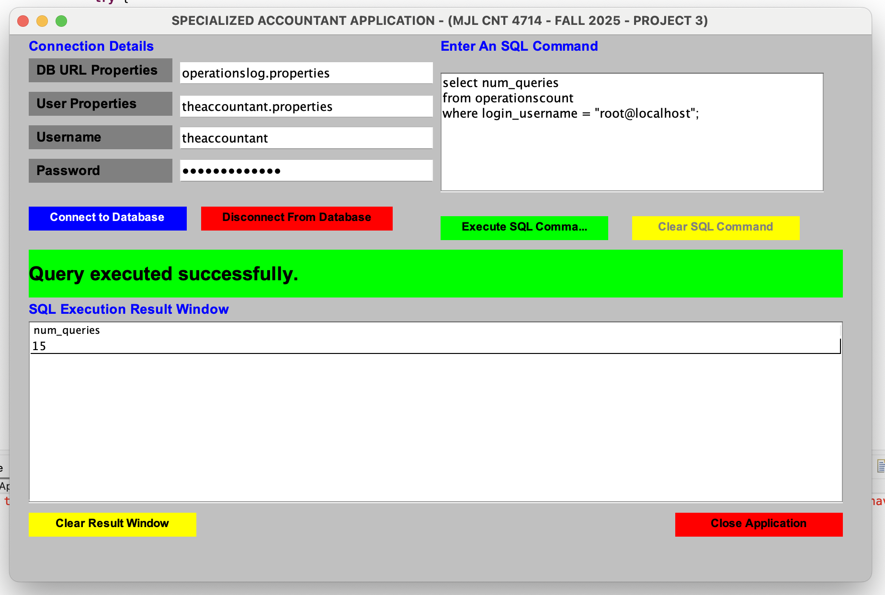

Two Client Server Application
This project demonstrated how to create a database on a MySQL server and building an GUI application that connects with the server via JDBC.

Skills Learned
- MySQL database management
- JDBC Connections to a MySQL Database
- GUI Creation using Java libraries
- Creation of Client Applications